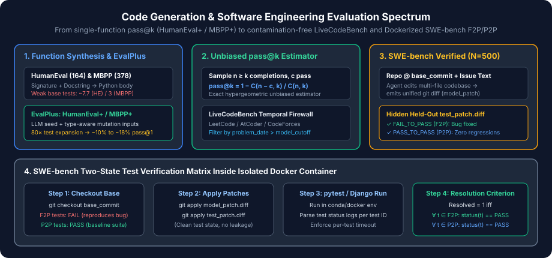

Code Generation & Software Engineering Benchmarks: HumanEval, MBPP, EvalPlus, LiveCodeBench & SWE-bench
Early code synthesis models were evaluated with surface-level string similarity metrics such as BLEU or CodeBLEU against a single reference implementation. However, in programming, infinitely many syntactically distinct programs compute the exact same mathematical function, while a single character change (< vs. <=) can have BLEU $>0.98$ yet fail completely at runtime.
Modern code evaluation therefore relies entirely on functional execution inside sandboxed environments. In this chapter, we trace the evolution of code benchmarks from standalone Python function completion (HumanEval, MBPP, and EvalPlus) to contamination-free competitive programming (LiveCodeBench) and multi-file repository bug resolution (SWE-bench Verified).

FAIL_TO_PASS / PASS_TO_PASS patch verification matrix.1. The Unbiased $\operatorname{pass@}k$ Estimator (Chen et al., 2021)
Suppose a model generates code completions for a problem with true (unknown) success probability $p \in [0, 1]$. The probability that at least one of $k$ independent samples passes all unit tests is $1 - (1 - p)^k$.
How should we estimate this quantity empirically?
- Why drawing exactly $k$ samples fails: Drawing a single batch of $k$ samples yields a binary $\{0, 1\}$ outcome per problem with massive variance.
-
Why plugging $\hat{p} = c/n$ into $1 - (1 - c/n)^k$ is biased: Suppose we draw $n \ge k$ samples (e.g., $n = 200$) and observe $c$ passing completions. Because $f(p) = 1 - (1 - p)^k$ is strictly concave for $k > 1$, Jensen's inequality guarantees that:
$$\mathbb{E}\!\left[1 - \left(1 - \frac{c}{n}\right)^k\right] < 1 - (1 - p)^k$$Wait—plugging $\hat{p} = c/n$ into $1 - (1 - \hat{p})^k$ systematically underestimates $\operatorname{pass@}k$ (or overestimates failure probability $(1-p)^k$)!
Chen et al. (2021, Evaluating Large Language Models Trained on Code) derived the exact minimum-variance unbiased estimator (MVUE) by computing the probability that a uniformly sampled subset of size $k$ drawn without replacement from the $n$ generated completions contains zero of the $c$ passing programs:
Indeed, since $\mathbb{E}\!\left[\binom{n-c}{k} / \binom{n}{k}\right] = (1 - p)^k$ for $c \sim \operatorname{Binomial}(n, p)$, this estimator is strictly unbiased for all $n \ge k$. To prevent factorial overflow when $n = 200$, it is evaluated as a numerically stable product:
2. Function-Level Benchmarks: HumanEval, MBPP & EvalPlus
HumanEval ($N = 164$, Chen et al., 2021)
HumanEval consists of $164$ hand-written Python programming problems created specifically for the Codex paper so that none of the problems existed on GitHub at the time of training. Each instance provides a Python function signature and docstring containing example doctests:
from typing import List
def has_close_elements(numbers: List[float], threshold: float) -> bool:
""" Check if in given list of numbers, are any two numbers closer to each other than
given threshold.
>>> has_close_elements([1.0, 2.0, 3.0], 0.5)
False
>>> has_close_elements([1.0, 2.8, 3.0, 4.0, 5.0, 2.0], 0.3)
True
"""The generated completion is concatenated with a hidden `check(candidate)` test suite containing an average of $7.7$ assertions and executed with a $3.0$-second timeout.
MBPP & MBPP-Sanitized ($N = 500$ / $378$, Austin et al., 2021)
Mostly Basic Python Problems (MBPP) contains $974$ entry-level crowd-sourced Python tasks ($500$ test problems, plus a human-verified MBPP-Sanitized subset of $378$ problems where ambiguous prompts were cleaned). Unlike HumanEval, MBPP provides a natural language prompt (e.g., "Write a function to find the shared elements from the given two lists.") without a function header. Consequently, evaluation harnesses include the first test assertion (or all $3$ assertions in 3-shot mode) in the prompt so the model knows the expected function name and argument order.
EvalPlus: HumanEval+ & MBPP+ (Liu et al., 2023)
Are $7.7$ assertions per problem enough to verify functional correctness? Liu et al. (2023) showed that many LLM-generated solutions pass original HumanEval/MBPP tests while failing on boundary conditions (empty lists, negative zero, duplicate elements, large inputs triggering $O(2^N)$ timeouts).
- HumanEval+ expands HumanEval from $7.7$ to $\sim 764$ tests per problem ($80\times$), dropping typical model $\operatorname{pass@}1$ scores by $6\text{--}15$ percentage points.
- MBPP+ expands MBPP from $3$ to $\sim 105$ tests per problem ($35\times$), dropping $\operatorname{pass@}1$ by $10\text{--}18$ percentage points.
3. LiveCodeBench: Contamination-Free Competitive Programming
Because HumanEval and MBPP have been public since 2021, their problem patterns and test cases are heavily discussed in tutorials and synthetic SFT datasets. LiveCodeBench (Jain et al., 2024) addresses contamination by continuously harvesting problems from LeetCode, AtCoder, and CodeForces and annotating every problem with its exact contest release date.
When evaluating a model released at timestamp $t_{\text{model}}$, LiveCodeBench computes $\operatorname{pass@}1$ exclusively over the slice of problems with $t_{\text{problem}} > t_{\text{model}}$. Furthermore, it evaluates four distinct coding modalities beyond raw synthesis:
- Code Generation: Standard problem statement $\to$ complete solution passing hidden I/O test cases within time/memory limits.
- Self-Repair: Given the problem statement, a buggy candidate program, and compiler/wrong-answer feedback, produce a corrected program.
- Code Execution: Given a Python function and a concrete input, predict the exact runtime output without an interpreter.
- Test Output Prediction: Given only the natural language problem specification and a test input, deduce the expected output before writing code.
4. SWE-bench, SWE-bench Lite & SWE-bench Verified
Real-world software engineering rarely consists of writing a 15-line self-contained algorithm from a docstring. Instead, engineers navigate repositories containing hundreds of thousands of lines of code, diagnose bug reports, trace cross-file dependencies, and author surgical patches that fix the defect without breaking existing tests.
SWE-bench (Jimenez et al., 2024) collected $2{,}294$ real GitHub issue–pull request pairs across $12$ major open-source Python repositories (django, scikit-learn, sympy, matplotlib, pytest, sphinx, astropy, requests, flask, pylint, seaborn, xarray).
The Two-State Test Verification Matrix (FAIL_TO_PASS & PASS_TO_PASS)
In SWE-bench, the model or coding agent receives only the issue description $x$ and a checkout of the repository at `base_commit` $C_{\text{base}}$. Crucially, the ground-truth pull request is split into two patches: the code fix $\Delta_{\text{gold}}$ and the unit-test additions/modifications $\Delta_{\text{test}}$ (`test_patch.diff`), which is held out from the agent.
When the agent submits its candidate unified diff $\hat{\Delta}$ (`model_patch.diff`), the harness spins up an isolated Docker container for that exact repository version and executes:
- Apply $\hat{\Delta}$ and the held-out $\Delta_{\text{test}}$ on top of $C_{\text{base}}$.
- Run the test suite and evaluate two disjoint test sets determined from the ground-truth PR:
FAIL_TO_PASS($T_{\text{F2P}}$): Tests introduced or updated by $\Delta_{\text{test}}$ that failed on $C_{\text{base}} + \Delta_{\text{test}}$ (reproducing the reported bug) and passed on $C_{\text{base}} + \Delta_{\text{gold}} + \Delta_{\text{test}}$.PASS_TO_PASS($T_{\text{P2P}}$): Existing regression tests in the affected test files that passed both before and after the PR.
Why SWE-bench Verified ($N = 500$) Replaced Raw SWE-bench
In August 2024, OpenAI and the SWE-bench authors recruited $93$ professional software engineers to manually audit SWE-bench samples. They discovered that over $38\%$ of raw SWE-bench issues were unfair or unsolvable because:
- The held-out `test_patch.diff` asserted an exact new function name or exact exception string that was never mentioned in the GitHub issue text.
- The issue description was too vague without the subsequent PR review comments.
- The Docker environment had broken external dependencies or flaky timing tests.
Filtering out these defective tasks produced SWE-bench Verified ($N = 500$), now the industry standard for evaluating autonomous software engineering agents.
| Benchmark | Test Size ($N$) | Granularity | Avg Tests / Task | Contamination Control | Primary Metric |
|---|---|---|---|---|---|
| HumanEval / HumanEval+ | $164$ | Single Python function | $7.7 \to 764$ ($80\times$) | Static (2021 hand-written) | $\operatorname{pass@}1$ (Base & Plus) |
| MBPP / MBPP+ (Sanitized) | $378$ ($500$ full) | Natural language $\to$ function | $3.0 \to 105$ ($35\times$) | Static (2021 crowd-sourced) | $\operatorname{pass@}1$ (Base & Plus) |
| LiveCodeBench | $800+$ (rolling) | Competitive I/O & repair | $15\text{--}80$ hidden tests | Dynamic date window ($t > t_{\text{cutoff}}$) | $\operatorname{pass@}1$ by release window |
| SWE-bench Lite | $300$ | Single-file repo bug fix | $T_{\text{F2P}} \cup T_{\text{P2P}}$ suite | GitHub issues (up to 2023) | $\%$ Resolved |
| SWE-bench Verified | $500$ | Multi-file repository patch | Human-audited $T_{\text{F2P}} \cup T_{\text{P2P}}$ | Human-vetted specification clarity | $\%$ Resolved |
5. Reference Implementation: Unbiased $\operatorname{pass@}k$, EvalPlus Mutation & SWE-bench Grader
The Python implementation below verifies the numerically stable hypergeometric $\operatorname{pass@}k$ estimator against the biased plug-in formula $1 - (1 - c/n)^k$, demonstrates how EvalPlus edge-case test expansion catches buggy implementations that pass base HumanEval tests, and executes the exact SWE-bench `FAIL_TO_PASS` / `PASS_TO_PASS` resolution logic.
from typing import Callable
def estimate_pass_at_k(n: int, c: int, k: int) -> float:
"""
Exact unbiased estimator of pass@k: 1 - C(n - c, k) / C(n, k)
from Chen et al. (2021), evaluated without factorial overflow.
"""
if n - c < k:
return 1.0
prod = 1.0
for i in range(k):
prod *= (n - c - i) / (n - i)
return 1.0 - prod
def biased_plugin_pass_at_k(n: int, c: int, k: int) -> float:
"""Biased plug-in estimator 1 - (1 - c/n)^k for comparison."""
p_hat = c / n
return 1.0 - (1.0 - p_hat) ** k
def evaluate_evalplus_vs_base(
candidates: list[Callable[[list[int]], bool]],
base_inputs: list[list[int]],
plus_inputs: list[list[int]],
oracle_fn: Callable[[list[int]], bool],
) -> tuple[float, float]:
"""Compare pass@1 on original base assertions vs. EvalPlus mutated edge-case inputs."""
c_base = 0
c_plus = 0
for cand in candidates:
base_ok = all(cand(inp) == oracle_fn(inp) for inp in base_inputs)
plus_ok = base_ok and all(cand(inp) == oracle_fn(inp) for inp in plus_inputs)
c_base += int(base_ok)
c_plus += int(plus_ok)
n = len(candidates)
return estimate_pass_at_k(n, c_base, 1), estimate_pass_at_k(n, c_plus, 1)
def grade_swebench_instance(
patch_applies_cleanly: bool,
f2p_tests: list[str],
p2p_tests: list[str],
post_patch_test_results: dict[str, str],
) -> bool:
"""
Exact SWE-bench resolution logic:
- Patch must apply cleanly
- Every FAIL_TO_PASS test must have status == 'PASSED'
- Every PASS_TO_PASS test must have status == 'PASSED'
"""
if not patch_applies_cleanly or not f2p_tests:
return False
f2p_ok = all(post_patch_test_results.get(t) == "PASSED" for t in f2p_tests)
p2p_ok = all(post_patch_test_results.get(t) == "PASSED" for t in p2p_tests)
return f2p_ok and p2p_ok
if __name__ == "__main__":
# 1. Verify unbiased pass@k vs biased plug-in for n=20, c=2, k=10
unbiased = estimate_pass_at_k(n=20, c=2, k=10)
biased = biased_plugin_pass_at_k(n=20, c=2, k=10)
print(f"n=20, c=2, k=10 -> Unbiased pass@10: {unbiased:.4f} vs Biased plug-in: {biased:.4f}")
# Exact: 1 - (18*17)/(20*19) = 1 - 306/380 = 74/380 = 0.1947... wait:
# C(18, 10) / C(20, 10) = (10 * 9) / (20 * 19) = 90 / 380 = 9 / 38 => 1 - 9/38 = 29/38 = 0.763158
assert abs(unbiased - (29 / 38)) < 1e-12
assert unbiased > biased # Concavity of 1-(1-p)^k makes plug-in underestimate pass@k
# 2. Demonstrate EvalPlus shrinkage on a function checking strictly increasing lists
oracle = lambda xs: all(xs[i] < xs[i + 1] for i in range(len(xs) - 1))
candidates = [
oracle, # Correct implementation
lambda xs: sorted(xs) == xs, # Bug: allows duplicates like [1, 2, 2]
lambda xs: xs[0] < xs[-1] if xs else True, # Bug: only checks endpoints
]
base_tests = [[1, 2, 3], [3, 2, 1], [1, 4, 2, 5]]
plus_tests = [[1, 2, 2], [1, 5, 3, 6], []]
pass1_base, pass1_plus = evaluate_evalplus_vs_base(candidates, base_tests, plus_tests, oracle)
print(f"Base pass@1: {pass1_base:.2%} -> EvalPlus pass@1: {pass1_plus:.2%}")
assert abs(pass1_base - 2 / 3) < 1e-9 and abs(pass1_plus - 1 / 3) < 1e-9
# 3. Verify SWE-bench F2P + P2P grading
f2p = ["tests/test_query.py::test_null_coalesce"]
p2p = ["tests/test_query.py::test_basic_select", "tests/test_query.py::test_join"]
assert grade_swebench_instance(
True,
f2p,
p2p,
{
"tests/test_query.py::test_null_coalesce": "PASSED",
"tests/test_query.py::test_basic_select": "PASSED",
"tests/test_query.py::test_join": "PASSED",
},
)
# Regression in a PASS_TO_PASS test must fail resolution even if F2P passes
assert not grade_swebench_instance(
True,
f2p,
p2p,
{
"tests/test_query.py::test_null_coalesce": "PASSED",
"tests/test_query.py::test_basic_select": "PASSED",
"tests/test_query.py::test_join": "FAILED",
},
)